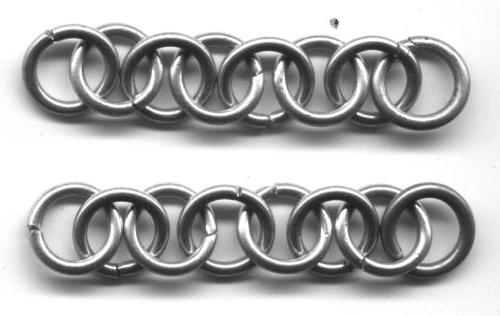
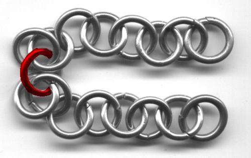
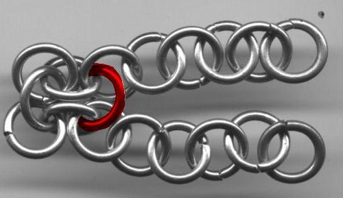
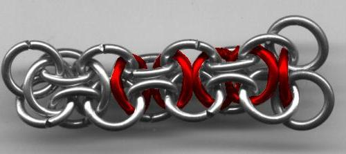
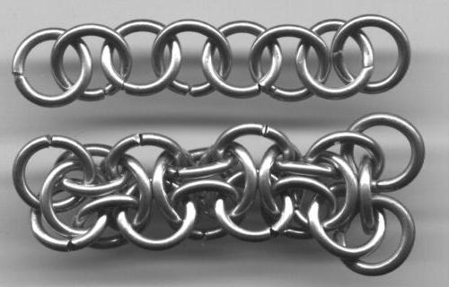
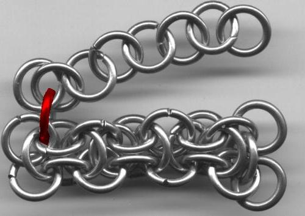
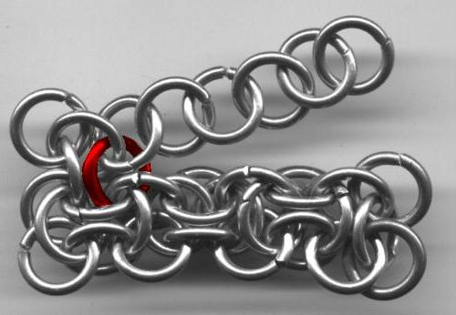
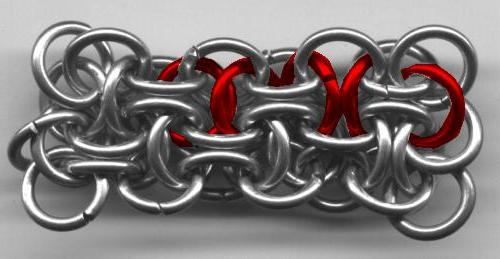
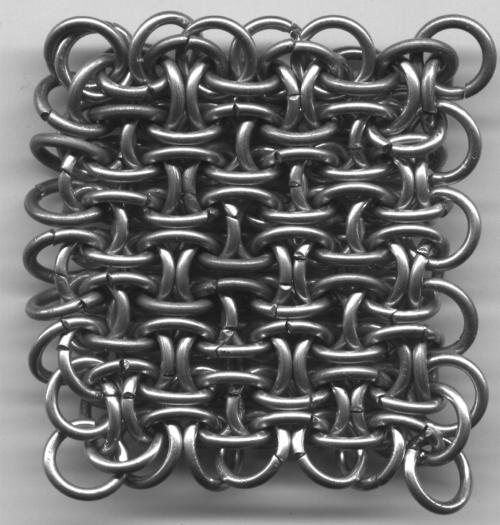

Constructing Hoodoo
Chain or Sheet
This is an alternative way to make Hoodoo Sheet (it also works for the chain version), without making unstable individual units that are liable to loose their form the second you touch them. This method uses 1-1-1 chains to make strings of units in a somewhat more stable way.Background on the weave: Hoodoo was a weave submitted by Blaise on M.A.I.L. He also provided the first tutorial, but, as I said, the construction gets a wee bit unstable in parts. The weave belongs to the spiral family, being made of interlocked four-ring Mobius units (or three-ring units in the chain form). It is a dense weave, and, as most such weaves are, very sensitive to ring size. The pictures in this tutorial use 14 ga 3/8” ID rings, which work well for the sheet version. To leave it as a chain requires slightly denser rings; I've had success with 16 ga 3/16".
So to start:
1. Make two 1-1-1 chains of whatever length you please. Lay them out so that the first ring of each chain leans away from the other, and the second of each leans toward the other, and so on.

2. Place a ring through the "eyes" or lemon-shaped openings formed by the first two rings of each chain.

3. Place a second ring through the "eyes" formed by the second and third rings of each chain. You can now see the Hoodoo units forming.

4. The pattern should be pretty obvious now. Repeat to the end of the chain. At this point, you have a plain old Hoodoo chain, which you can now expand into a Hoodoo sheet.

5. To make the sheet, add another 1-1-1 chain next to the Hoodoo chain you have created. Once again, make sure that the rings have opposite leans to the adjacent chain. This new chain will have the same lean as the one on the very bottom.
Every ring in the 1-1-1 chain is new, but I’m young and impatient, so I didn’t color the whole thing red. Sorry if I have disappointed.

6. Once again, you are linking a new ring through the two chains, but this time it should also go through the vertical third ring that you put through the "eye" in the original chain.

7. And again…through three rings on the bottom, two on the top.

8. And so on, until you're done.

Keep expanding by adding 1-1-1 chains as you please.
Woohoo!! Hoodoo!!
